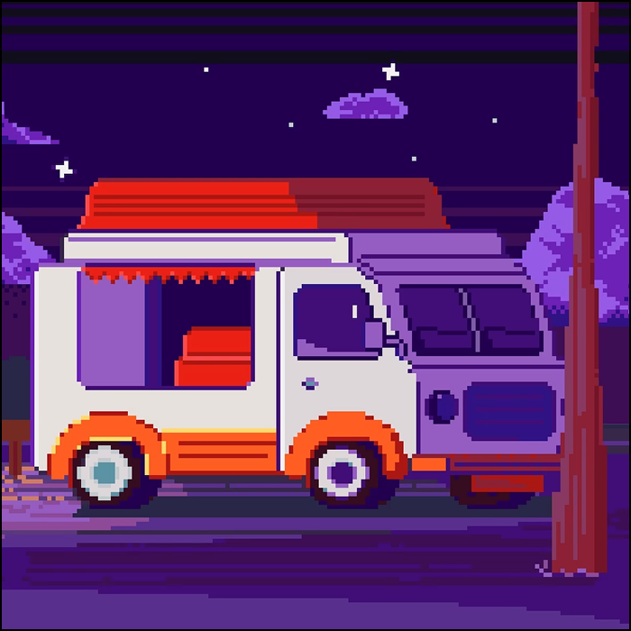

Фритрек и нулевой спринт: Подготовка к работе
</html>

Это было самое начало пути. На этом этапе важно было проникнуться основами и настроиться на учёбу. И, возможно, подумать, как новые знания могут повлиять на ваше будущее.
Была очень сильная мотивация и желание узнать что-то новое. Я учусь на 3 курсе университета, остался всего год, поэтому для меня очень важно найти свое место в мире. Возможно с помощью курса, который мне подарил парень на Новый год!